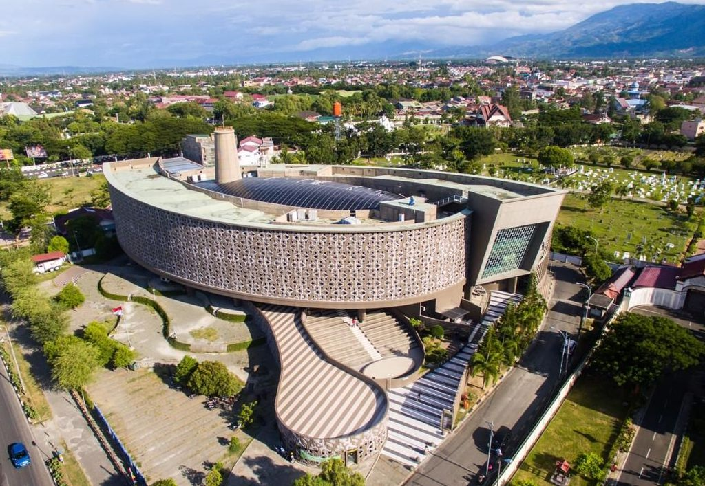

Destinasi Wisata Aceh

Masjid Raya Baiturrahman
Ikon wisata religi paling terkenal di Aceh.

Pantai Iboih
Pantai indah dengan air laut yang jernih.

Museum Tsunami
Monumen sejarah dan edukasi tsunami Aceh.
Ikon wisata religi paling terkenal di Aceh.
Pantai indah dengan air laut yang jernih.

Monumen sejarah dan edukasi tsunami Aceh.